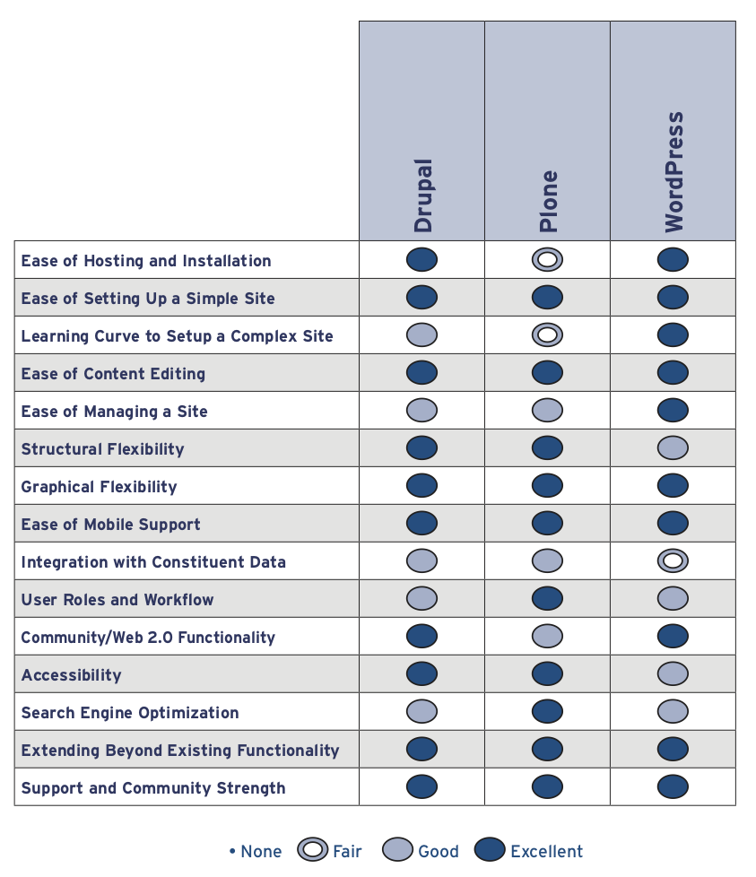

Présentation de Plone
Contents
Présentation de Plone#
Qu’est-ce que Plone ?#
Plone est un Système de gestion de contenu - Content Management System (CMS).
Définition CMS
https://fr.wikipedia.org/wiki/Syst%C3%A8me_de_gestion_de_contenu
séparer les opérations de gestion de la forme et du contenu
fournir une chaîne de publication (workflow)
permettre de structurer le contenu
permettre de hiérarchiser les utilisateurs et de leur attribuer des rôles et des permissions
permettre la gestion de versions des contenus
Technologies
écrit en Python : https://www.python.org
construit à l’aide du serveur d’application Zope : https://www.zope.org, https://zope.readthedocs.io
utilise la base de donnée objet ZODB : https://www.zope.dev
Plone est un framework spécialisé
Voir le document
catégorisation des frameworks
Origine du nom Plone
Où puis-tester Plone ?#
Site de démonstration Plone 6 Classic UI : https://classic.demo.plone.org
Site de démonstration Plone 6 Volto : https://demo.plone.org
Qui utilise Plone ?#
Utilisation dans les universités (belges)
University of Jyväskylä : https://www.jyu.fi
Université UGent : https://www.ugent.be
Université KULeuven : https://www.kuleuven.be
Utilisation en Région Wallonne
Communes et villes wallonnes gérés par IMIO : https://www.imio.be/imio-et-vous/qui-utilise-nos-applications
Villes : https://www.namur.be, https://www.mons.be, https://www.liege.be
Cas d’utilisation
création d’un site public (avec nombreux éditeurs et droits différenciés)
création d’un intranet
création d’application de workflow documentaire
création de portails (formulaires et interface avec les applications métiers)
Identifier un site Plone
A l’aide de l’extension Wappalyser sur Firefox
Plone est régulièrement utilisé comme solution d’édition (backend) avec un export sous forme statique. Dans ce cas il n’est pas possible d’identifier son utilisation.
Pourquoi Plone ?#
Plone features : https://plone.org/why-plone/features
Sécurité : https://nvd.nist.gov/vuln/search
Modèle de permissions/rôles
Moteur de workflow
Moteur de recherche intégré
API RESTfull (plone.restapi)
Volto : Frontend en ReactJS
Plone vs Drupal vs Wordpress#
Comparatif IdealWare 2017

Comment apprendre Plone ?#
Formations en ligne : https://training.plone.org
Documentation de référence : https://6.docs.plone.org/, https://5.docs.plone.org
Avec un Ploneur senior :-)